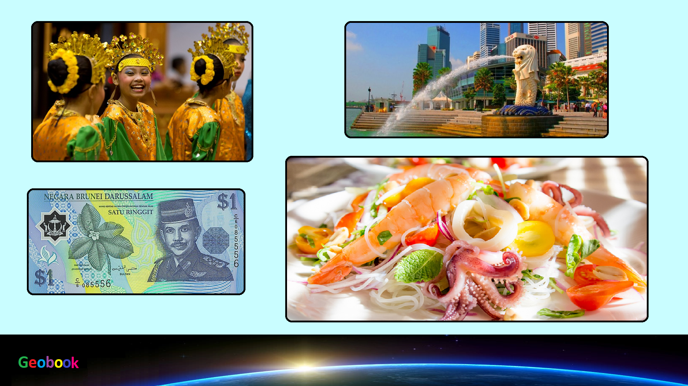

____
Валюта
Валюта в Брунее - Брунейский доллар.
Курс: 1 Брунейский доллар - 55,84 рублей (7 февраля 2021).
Появился Брунейский доллар в 1967 году. Находятся банкноты номиналом 1, 5, 10, 20, 25, 50, 100, 500, 1000, 10 000 долларов, а также монеты — 1, 5, 10, 20, 50 сенов.
История
Ранняя валюта в Брунее включала раковины каури. Бруней известен своими бронзовыми заварными чайниками, которые использовались как валюта в товарообмене вдоль побережья Северного Борнео.
Бруней выпустил оловянные монеты, называемые питис (pitis) в 1285 году хиджры (1868 году нашей эры). Их выпуск последовал за монетами в один цент в 1304 л.х. (1888 н. э.). Этот цент равнялся одной сотой доллара.
Будучи протекторатом Великобритании в начале XX столетия, Бруней использовал доллар Проливов, а позже малайский доллар и доллар Малайи и Британского Борнео до 1967 года, когда Бруней начал выпускать собственную валюту.
Брунейский доллар заменил малайский доллар и британский доллар Борнео в 1967 году после образования Малайзии и объявления о независимости Сингапура. До 23 июня 1973 малайзийский ринггит обменивался по номиналу на сингапурский доллар и брунейский доллар. Министерство финансов Сингапура и Брунейское валютное ведомство всё ещё поддерживают взаимный режим валютного комитета для их двух валют. Доллар принят как «общепринятое платёжное средство» в Сингапуре согласно Договору о взаимозаменяемости валют, хотя не является там законным платёжным средством. Аналогично, сингапурский доллар обычно принимается в Брунее.
____
